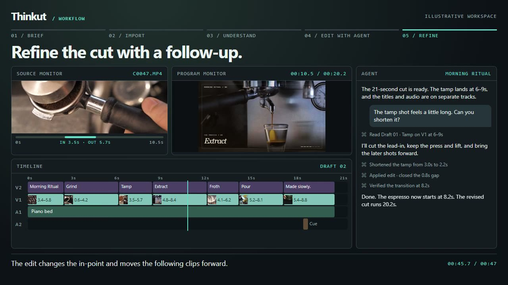

DESKTOP VIDEO EDITOR
Find footage and edit with an Agent.
Thinkut indexes what happens and what’s said in your footage. Find the right moment in a source clip, then ask the Agent to assemble or revise a sequence you can keep editing.

How Thinkut finds footage
Captions and transcripts carry source timestamps, so a search result can point to a moment inside a clip.
Describe sampled frames
Visual observations help review complex actions and supplement the searchable index.
Sampled observations cover the frames seen. Review a candidate against the source before choosing a cut.
How the Agent edits
The Agent gathers evidence and proposes commands. The desktop editor applies them and returns the updated sequence.
User requestCut a 21-second coffee film, from beans to the finished cup.
Retrieve candidates with source time
Search the project index for likely shots, inspect source frames if allowed, and read the current sequence before placing clips.
search_assetsrequest_source_framesread_editing_state
- Source select
- C0047.MP4 · 2.7–5.7s
- Timeline state
- V1 is empty
Try an Agent edit
Start with Add the tamp shot, apply the edit, then try Trim the lead-in.
Search this project or place a source range on V1.
The browser sandbox matches keywords against curated captions and applies place and trim commands to its own V1 timeline.
Explore source evidence 8 sample files
Workflow demo
Morning Ritual follows an espresso from beans to cup. The walkthrough shows how seven excerpts are chosen from eight files, then revises one shot on request.
Scripted walkthrough with curated captions and condensed timing.
Watch the 20-second final cut ↗